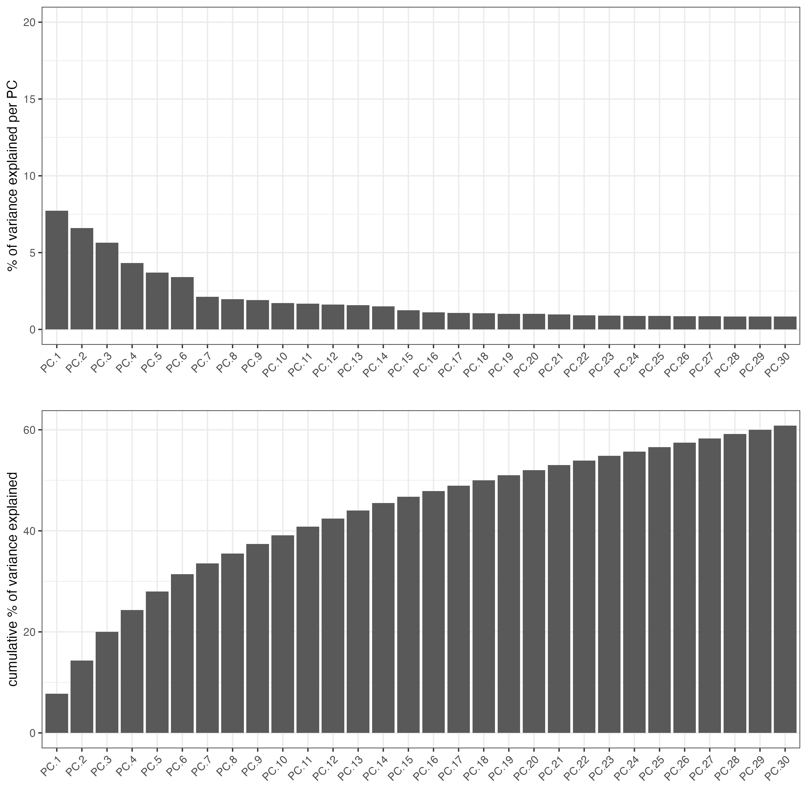
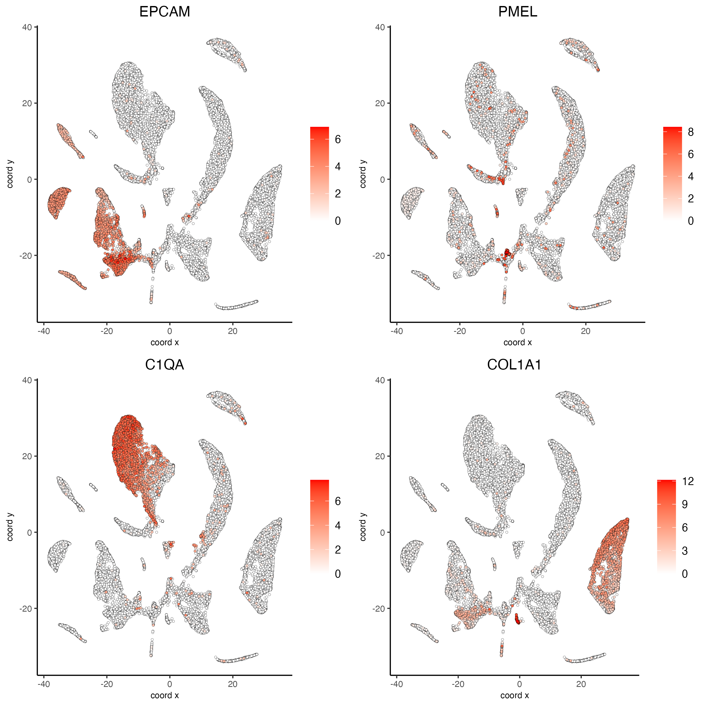

Single Cell Human Lung Adenocarcinoma
Source:vignettes/singlecell_lung_adenocarcinoma.Rmd
singlecell_lung_adenocarcinoma.Rmd1 Dataset Explanation
Maynard et al. Processed Illumina Single Cell RNAseq of metastatic lung cancer using 49 clinical biopsies obtained from 30 patients before and during targeted therapy. The raw data can be found here.
To run this vignette, download the files from this Google drive
2 Set up Giotto Environment
# Ensure Giotto Suite is installed.
if(!"Giotto" %in% installed.packages()) {
pak::pkg_install("drieslab/Giotto")
}
# Ensure the Python environment for Giotto has been installed.
genv_exists <- Giotto::checkGiottoEnvironment()
if(!genv_exists){
# The following command need only be run once to install the Giotto environment.
Giotto::installGiottoEnvironment()
}
library(Giotto)
# 1. set working directory
results_folder <- "/path/to/results/"
# Optional: Specify a path to a Python executable within a conda or miniconda
# environment. If set to NULL (default), the Python executable within the previously
# installed Giotto environment will be used.
python_path <- NULL # alternatively, "/local/python/path/python" if desired.
# 3. create giotto instructions
instructions <- createGiottoInstructions(save_dir = results_folder,
save_plot = TRUE,
show_plot = FALSE,
return_plot = FALSE,
python_path = python_path) 3 Create the Giotto object
Load data
data_path <- "/path/to/data/"
raw.data <- as.data.frame(
data.table::fread(file.path(data_path, "S01_datafinal.csv"),
header = TRUE))
rownames(raw.data) <- raw.data$V1
raw.data <- raw.data[-1]Load metadata
Find ERCC"s, compute the percent ERCC, and drop them from the raw data.
erccs <- grep(pattern = "^ERCC-",
x = rownames(x = raw.data),
value = TRUE)
percent.ercc <- Matrix::colSums(raw.data[erccs, ])/Matrix::colSums(raw.data)
ercc.index <- grep(pattern = "^ERCC-",
x = rownames(x = raw.data),
value = FALSE)
raw.data <- raw.data[-ercc.index,]Create Giotto object
giotto_SC <- createGiottoObject(expression = raw.data,
instructions = instructions)Calculate percent ribosomal genes and add to metadata
ribo.genes <- grep(pattern = "^RP[SL][[:digit:]]",
x = rownames(raw.data),
value = TRUE)
percent.ribo <- Matrix::colSums(raw.data[ribo.genes, ])/Matrix::colSums(raw.data)
giotto_SC <- addCellMetadata(giotto_SC,
new_metadata = data.frame(percent_ribo = percent.ribo))4 Process Giotto Object
## filter
giotto_SC <- filterGiotto(gobject = giotto_SC,
expression_threshold = 1,
feat_det_in_min_cells = 10,
min_det_feats_per_cell = 500,
expression_values = "raw",
verbose = TRUE)
## normalize
giotto_SC <- normalizeGiotto(gobject = giotto_SC,
scalefactor = 6000)
## add gene & cell statistics
giotto_SC <- addStatistics(gobject = giotto_SC)5 Dimension Reduction
## PCA ##
giotto_SC <- calculateHVF(gobject = giotto_SC)
giotto_SC <- runPCA(gobject = giotto_SC,
center = TRUE,
cale_unit = TRUE)
screePlot(giotto_SC,
ncp = 30)
6 Cluster
## cluster and run UMAP ##
# sNN network (default)
giotto_SC <- createNearestNetwork(gobject = giotto_SC,
dim_reduction_to_use = "pca",
dim_reduction_name = "pca",
dimensions_to_use = 1:10,
k = 15)
# UMAP
giotto_SC <- runUMAP(giotto_SC,
dimensions_to_use = 1:10)
# Leiden clustering
giotto_SC <- doLeidenCluster(gobject = giotto_SC,
resolution = 0.5,
n_iterations = 1000)
plotUMAP(gobject = giotto_SC,
cell_color = "leiden_clus",
show_NN_network = TRUE,
point_size = 1.5)7 Differential Expression
markers_scran <- findMarkers_one_vs_all(gobject = giotto_SC,
method = "scran",
expression_values = "normalized",
cluster_column = "leiden_clus",
min_feats = 3)
topgenes_scran <- unique(markers_scran[, head(.SD, 2), by = "cluster"][["feats"]])
plotMetaDataHeatmap(giotto_SC,
expression_values = "normalized",
metadata_cols = "leiden_clus",
selected_feats = topgenes_scran,
y_text_size = 8,
show_values = "zscores_rescaled")8 FeaturePlot
# Plot known marker genes across different cell types. e.g. EPCAM for epithelial cells
dimFeatPlot2D(giotto_SC,
feats = c("EPCAM", "PMEL", "C1QA","COL1A1"),
cow_n_col = 2)
9 Cell type Annotation
marker_genes <- list(
T_cells = c("CD2", "CD3D", "CD3E", "CD3G"),
macrophages = c("MARCO", "CSF1R", "CD68", "GLDN", "APOE", "CCL3L1", "TREM2", "C1QB", "NUPR1", "FOLR2", "RNASE1", "C1QA"),
dendritic = c("CD1E", "CD1C", "FCER1A", "PKIB", "CYP2S1", "NDRG2"),
mast= c("CMA1", "TPSAB1", "TPSB2"),
B_cells = c("IGLL5", "MZB1", "JCHAIN", "DERL3", "SDC1", "MS$A1", "BANK1", "PAX5", "CD79A"),
B_cells_PB = c("PRDM1", "XSP1", "IRF4"),
B_cell_mem = c("MS4A1", "IRF8"),
housekeeping = c("ACTB", "GAPDH", "MALAT1"),
neutrophils = c("FCGR3B", "ALPL", "CXCR1", "CXCR2", "ADGRG3", "CMTM2", "PROK2", "MME", "MMP25", "TNFRSF10C"),
pdcs = c("SLC32A1", "SHD", "LRRC26", "PACSIN1", "LILRA4", "CLEC4C", "DNASE1L3", "SCT", "LAMP5"),
carcinoma_cells = c("FCER1G", "IFI30", "LAPTM5", "ARHGDIB", "MALAT1"),
epithelial = c("EPCAM", "CD151")
)
library(dplyr)
library(ComplexHeatmap)
heatmap_table <- calculateMetaTable(gobject = giotto_SC,
expression_values = "normalized",
metadata_cols = "leiden_clus",
selected_feats = unlist(marker_genes))
zscores = value = zscores_rescaled_per_feat = NULL
heatmap_table[, zscores := scale(value), by = c("variable")]
heatmap_table[, zscores_rescaled_per_feat := scales::rescale(zscores, to = c(-1,1)), by = c("variable")]
heatmap_table$cell_types_markers <- heatmap_table$variable
heatmap_table <- heatmap_table %>%
mutate(cell_types_markers = case_when(
cell_types_markers %in% marker_genes[["B_cell_mem"]] ~ "B_cell_mem",
cell_types_markers %in% marker_genes[["B_cells"]] ~ "B_cells",
cell_types_markers %in% marker_genes[["carcinoma_cells"]] ~ "carcinoma_cells",
cell_types_markers %in% marker_genes[["dendritic"]] ~ "dendritic",
cell_types_markers %in% marker_genes[["epithelial"]] ~ "epithelial",
cell_types_markers %in% marker_genes[["housekeeping"]] ~ "housekeeping",
cell_types_markers %in% marker_genes[["macrophages"]] ~ "macrophages",
cell_types_markers %in% marker_genes[["mast"]] ~ "mast",
cell_types_markers %in% marker_genes[["neutrophils"]] ~ "neutrophils",
cell_types_markers %in% marker_genes[["pdcs"]] ~ "pdcs",
cell_types_markers %in% marker_genes[["T_cells"]] ~ "T_cells"
))
heatmap_matrix <- heatmap_table[,c("leiden_clus", "variable","zscores_rescaled_per_feat")]
heatmap_matrix <- tidyr::pivot_wider(heatmap_matrix,
names_from = "leiden_clus",
values_from = "zscores_rescaled_per_feat")
rownames_matrix <- heatmap_matrix$variable
colnames_matrix <- colnames(heatmap_matrix)
heatmap_matrix <- as.matrix(heatmap_matrix[,-1])
rownames(heatmap_matrix) <- rownames_matrix
cell_types_heatmap <- unique(heatmap_table[,c("variable", "cell_types_markers")])
colnames(cell_types_heatmap)[2] <- "cell_types"
cell_types_heatmap <- cell_types_heatmap[order(cell_types),]
n_leiden_clusters <- max(pDataDT(giotto_SC)$leiden_clus)
panel_fun = function(index, nm) {
grid.rect()
grid.text(nm, 0.5, 0.5, gp = gpar(fontsize = 6))
}
## heatmap z-score per leiden cluster
png(filename = paste0(results_folder, "4_heatmap_all_clusters_cell_types.png"),
width = 2000,
height = 1500,
res = 300)
Heatmap(heatmap_matrix,
cluster_rows = FALSE,
cluster_columns = FALSE,
row_order = cell_types_heatmap$variable,
column_order = as.character(1:n_leiden_clusters),
row_names_gp = gpar(fontsize = 5),
column_names_gp = gpar(fontsize = 8),
column_names_rot = 45,
heatmap_legend_param = list(title = "",
labels_gp = gpar(fontsize = 8)),
left_annotation = rowAnnotation(cell_types = anno_block(align_to = list(
B_cell_mem = c("IRF8", "MS4A1"),
B_cells = c("IGLL5", "MZB1", "JCHAIN", "DERL3", "SDC1", "MS$A1", "BANK1", "PAX5", "CD79A"),
T_cells = c("CD2", "CD3D", "CD3E", "CD3G"),
B_cells_PB = c("PRDM1", "XSP1", "IRF4"),
carcinoma_cells = c("FCER1G", "IFI30", "LAPTM5", "ARHGDIB", "MALAT1"),
dendritic = c("CD1E", "CD1C", "FCER1A", "PKIB", "CYP2S1", "NDRG2"),
epithelial = c("EPCAM", "CD151"),
housekeeping = c("ACTB", "GAPDH"),
macrophages = c("MARCO", "CSF1R", "CD68", "GLDN", "APOE", "CCL3L1", "TREM2", "C1QB", "NUPR1", "FOLR2", "RNASE1", "C1QA"),
mast = c("CMA1", "TPSAB1", "TPSB2"),
neutrophils = c("FCGR3B", "ALPL", "CXCR1", "CXCR2", "ADGRG3", "CMTM2", "PROK2", "MME", "MMP25", "TNFRSF10C"),
pdcs = c("SLC32A1", "SHD", "LRRC26", "PACSIN1", "LILRA4", "CLEC4C", "DNASE1L3", "SCT", "LAMP5")
),
panel_fun = panel_fun,
width = unit(2, "cm")
) )
)
dev.off()
lung_labels <- c("carcinoma_cells",#1
"housekeeping",#2
"T_cells",#3
"macrophages",#4
"T_cells",#5
"housekeeping",#6
"T_cells",#7
"epithelial",#8
"macrophages",#9
"housekeeping",#10
"housekeeping",#11
"carcinoma_cells",#12
"housekeeping",#13
"B_cells",#14
"neutrophils",#15
"pDCs",#16
"housekeeping",#17
"housekeeping",#18
"Mast",#19
"epithelial",#20
"housekeeping",#21
"B_cells",#22
"T_cells",#23
"housekeeping",#24
"macrophages",#25
"housekeeping",#26
"housekeeping",#27
"housekeeping",#28
"housekeeping",#29
"B_cells", #30
"dendritic", #31
"neutrophils" #32
)
names(lung_labels) <- 1:32
giotto_SC <- annotateGiotto(gobject = giotto_SC,
annotation_vector = lung_labels ,
cluster_column = "leiden_clus",
name = "lung_labels")
dimPlot2D(gobject = giotto_SC,
dim_reduction_name = "umap",
cell_color = "lung_labels",
show_NN_network = TRUE,
point_size = 1.5)10 Session Info
R version 4.4.0 (2024-04-24)
Platform: x86_64-apple-darwin20
Running under: macOS Sonoma 14.5
Matrix products: default
BLAS: /System/Library/Frameworks/Accelerate.framework/Versions/A/Frameworks/vecLib.framework/Versions/A/libBLAS.dylib
LAPACK: /Library/Frameworks/R.framework/Versions/4.4-x86_64/Resources/lib/libRlapack.dylib; LAPACK version 3.12.0
locale:
[1] en_US.UTF-8/en_US.UTF-8/en_US.UTF-8/C/en_US.UTF-8/en_US.UTF-8
time zone: America/New_York
tzcode source: internal
attached base packages:
[1] grid stats graphics grDevices utils datasets methods base
other attached packages:
[1] ComplexHeatmap_2.20.0 dplyr_1.1.4 Giotto_4.1.0
[4] GiottoClass_0.3.4
loaded via a namespace (and not attached):
[1] RColorBrewer_1.1-3 shape_1.4.6.1
[3] rstudioapi_0.16.0 jsonlite_1.8.8
[5] magrittr_2.0.3 magick_2.8.4
[7] farver_2.1.2 rmarkdown_2.27
[9] GlobalOptions_0.1.2 zlibbioc_1.50.0
[11] ragg_1.3.2 vctrs_0.6.5
[13] Cairo_1.6-2 DelayedMatrixStats_1.26.0
[15] GiottoUtils_0.1.10 terra_1.7-78
[17] htmltools_0.5.8.1 S4Arrays_1.4.1
[19] BiocNeighbors_1.22.0 SparseArray_1.4.8
[21] parallelly_1.38.0 htmlwidgets_1.6.4
[23] plyr_1.8.9 plotly_4.10.4
[25] igraph_2.0.3 iterators_1.0.14
[27] lifecycle_1.0.4 pkgconfig_2.0.3
[29] rsvd_1.0.5 Matrix_1.7-0
[31] R6_2.5.1 fastmap_1.2.0
[33] clue_0.3-65 GenomeInfoDbData_1.2.12
[35] MatrixGenerics_1.16.0 future_1.34.0
[37] digest_0.6.36 colorspace_2.1-1
[39] S4Vectors_0.42.1 dqrng_0.4.1
[41] irlba_2.3.5.1 textshaping_0.4.0
[43] GenomicRanges_1.56.1 beachmat_2.20.0
[45] labeling_0.4.3 progressr_0.14.0
[47] fansi_1.0.6 httr_1.4.7
[49] abind_1.4-5 compiler_4.4.0
[51] withr_3.0.0 doParallel_1.0.17
[53] backports_1.5.0 BiocParallel_1.38.0
[55] DelayedArray_0.30.1 rjson_0.2.21
[57] bluster_1.14.0 gtools_3.9.5
[59] GiottoVisuals_0.2.4 tools_4.4.0
[61] future.apply_1.11.2 glue_1.7.0
[63] dbscan_1.2-0 checkmate_2.3.2
[65] cluster_2.1.6 reshape2_1.4.4
[67] generics_0.1.3 gtable_0.3.5
[69] tidyr_1.3.1 data.table_1.15.4
[71] BiocSingular_1.20.0 ScaledMatrix_1.12.0
[73] metapod_1.12.0 sp_2.1-4
[75] utf8_1.2.4 XVector_0.44.0
[77] BiocGenerics_0.50.0 RcppAnnoy_0.0.22
[79] foreach_1.5.2 ggrepel_0.9.5
[81] pillar_1.9.0 stringr_1.5.1
[83] limma_3.60.4 circlize_0.4.16
[85] lattice_0.22-6 deldir_2.0-4
[87] tidyselect_1.2.1 SingleCellExperiment_1.26.0
[89] locfit_1.5-9.10 scuttle_1.14.0
[91] knitr_1.48 IRanges_2.38.1
[93] edgeR_4.2.1 SummarizedExperiment_1.34.0
[95] scattermore_1.2 stats4_4.4.0
[97] xfun_0.46 Biobase_2.64.0
[99] statmod_1.5.0 matrixStats_1.3.0
[101] stringi_1.8.4 UCSC.utils_1.0.0
[103] lazyeval_0.2.2 yaml_2.3.10
[105] evaluate_0.24.0 codetools_0.2-20
[107] tibble_3.2.1 colorRamp2_0.1.0
[109] cli_3.6.3 uwot_0.2.2
[111] reticulate_1.38.0 systemfonts_1.1.0
[113] munsell_0.5.1 Rcpp_1.0.13
[115] GenomeInfoDb_1.40.1 globals_0.16.3
[117] png_0.1-8 parallel_4.4.0
[119] ggplot2_3.5.1 scran_1.32.0
[121] sparseMatrixStats_1.16.0 listenv_0.9.1
[123] SpatialExperiment_1.14.0 viridisLite_0.4.2
[125] scales_1.3.0 purrr_1.0.2
[127] crayon_1.5.3 GetoptLong_1.0.5
[129] rlang_1.1.4 cowplot_1.1.3